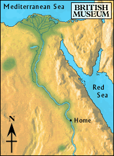

Faiyum

The boat turned into a narrow river that flowed just to the west of the Nile.
After a couple of days, the boat reached the ‘great lake'. The boy looked out at the land and saw fields, homes made of mudbrick, and people working.
The boat was rowed to shore, and the boy got out of the boat. He did not see his brother in the group of workers on the shore. His brother was not there.
Should he explore the fertile land or get on a boat heading back towards the Nile?